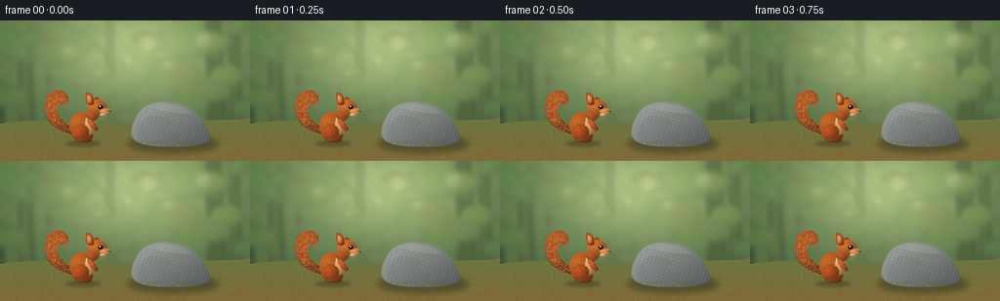
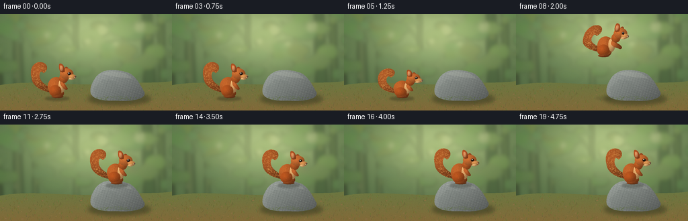
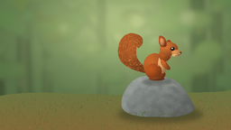

CODING AGENTS AS PIXEL WORLD MODELS
traex/GPT-6.1-Sol · dynamic_spatial_relationship_0025
点击播放 · 原生 RGB 像素
逐轮保存的候选
回放视频、检查图与代码变化。
每份候选均可单独播放。实际图片检查记录在下方工具轨迹中。
候选 01播放与检查图
点击播放 · 原生 RGB 像素


展开代码变化
--- 上一保存版本
+++ 本次保存版本
@@ -0,0 +1,219 @@
+from pathlib import Path
+import math
+import numpy as np
+from PIL import Image, ImageDraw, ImageFilter
+import artifact_io
+
+ROOT = Path(__file__).resolve().parent
+W,H,S=256,144,3
+rng=np.random.default_rng(2511)
+
+def bezier(points,n=80):
+ p=np.asarray(points,float);t=np.linspace(0,1,n)[:,None]
+ return (1-t)**3*p[0]+3*(1-t)**2*t*p[1]+3*(1-t)*t*t*p[2]+t**3*p[3]
+
+def pathmask(paths,size=(W*S,H*S)):
+ im=Image.new('L',size); d=ImageDraw.Draw(im)
+ pts=[]
+ for p in paths:
+ pts.extend(bezier(p))
+ d.polygon([(int(x*S),int(y*S)) for x,y in pts],fill=255)
+ return im
+
+def ellipse_mask(box,size=(W*S,H*S)):
+ m=Image.new('L',size);ImageDraw.Draw(m).ellipse(tuple(int(x*S) for x in box),fill=255);return m
+
+def shade(image,mask,color,center=None,rad=(20,20),noise=0.0,seed=0):
+ # Shape shading from upper left with fine deterministic surface texture.
+ w,h=image.size; yy,xx=np.mgrid[:h,:w];xx=xx/S;yy=yy/S
+ if center is None:center=(w/S/2,h/S/2)
+ u=(xx-center[0])/rad[0];v=(yy-center[1])/rad[1]
+ light=.88+.21*np.clip(1-np.sqrt(u*u+v*v),0,1)-.12*u-.12*v
+ if noise:light+=np.random.default_rng(seed).normal(0,noise,(h,w))
+ rgb=np.clip(light[:,:,None]*np.array(color)[None,None,:],0,255).astype('uint8')
+ image.paste(Image.fromarray(rgb), (0,0),mask)
+
+def line(d,pts,fill,width=1):
+ d.line([(round(x*S),round(y*S)) for x,y in pts],fill=fill,width=max(1,round(width*S)),joint='curve')
+
+def ellipse(d,b,fill):d.ellipse(tuple(int(v*S) for v in b),fill=fill)
+
+# A softly lit woodland clearing, painted once to keep the camera perfectly still.
+y,x=np.mgrid[:H*S,:W*S];xf=x/S;yf=y/S
+light=np.exp(-((xf-138)**2/11000+(yf-28)**2/4000))
+base=np.zeros((H*S,W*S,3),float)
+for k,(a,b) in enumerate([(82,92),(106,87),(67,63)]):base[:,:,k]=a+light*b
+base+=np.random.default_rng(61).normal(0,.7,(H*S,W*S,1))
+bg=Image.fromarray(np.clip(base,0,255).astype(np.uint8));trees=Image.new('RGBA',bg.size);d=ImageDraw.Draw(trees)
+for xx,ww,c in [(-8,17,(62,71,45,160)),(28,9,(90,101,65,115)),(53,4,(115,126,79,110)),(223,12,(58,79,47,120)),(242,7,(79,96,56,115)),(188,6,(125,137,87,100)),(114,4,(130,140,91,85))]:
+ d.polygon([(int((xx-ww)*S),0),(int((xx+ww*.2)*S),0),(int((xx+ww*.7)*S),108*S),(int((xx-ww*.7)*S),109*S)],fill=c)
+ line(d,[(xx,42),(xx-16,24),(xx-26,11)],c,2)
+for i in range(100):
+ xx=rng.uniform(-20,276);yy=rng.uniform(-10,95);rr=rng.uniform(3,19)
+ ellipse(d,(xx-rr,yy-rr*.6,xx+rr,yy+rr*.6),(int(rng.uniform(65,135)),int(rng.uniform(103,163)),int(rng.uniform(43,84)),int(rng.uniform(12,56))))
+for xx,yy,rr in [(153,24,9),(130,41,6),(172,44,5),(101,54,4),(207,19,8),(70,31,5)]:
+ ellipse(d,(xx-rr,yy-rr,xx+rr,yy+rr),(244,237,177,48))
+bg=Image.alpha_composite(bg.convert('RGBA'),trees.filter(ImageFilter.GaussianBlur(3*S))).convert('RGB')
+# Earth and moss.
+ground_mask=pathmask([[(0,106),(50,98),(98,107),(149,105)],[(149,105),(199,101),(238,104),(256,100)],[(256,100),(256,125),(256,135),(256,144)],[(256,144),(178,144),(57,144),(0,144)],[(0,144),(0,130),(0,117),(0,106)]])
+yy,xx=np.mgrid[:H*S,:W*S]; t=np.clip((yy/S-100)/44,0,1)
+noise=np.random.default_rng(44).normal(0,2.0,(H*S,W*S))
+earth=np.stack([107+23*t+noise,119-13*t+noise,65-8*t+noise],2)
+bg.paste(Image.fromarray(np.uint8(np.clip(earth,0,255))),(0,0),ground_mask)
+d=ImageDraw.Draw(bg)
+for i in range(560):
+ gx=rng.uniform(0,256);gy=rng.uniform(106,145)
+ col=(int(rng.uniform(73,131)),int(rng.uniform(84,131)),int(rng.uniform(36,64)))
+ ln=rng.uniform(1,4)*(gy/144)
+ line(d,[(gx,gy),(gx+rng.uniform(-1.5,1.5),gy-ln)],col,.28)
+for i in range(35):
+ gx=rng.uniform(0,256);gy=rng.uniform(111,144)
+ ellipse(d,(gx,gy,gx+rng.uniform(1,3),gy+.9),(137,111,67))
+# Rock shadow grounded in the clearing.
+sh=Image.new('RGBA',bg.size);ds=ImageDraw.Draw(sh);ellipse(ds,(131,118,224,135),(34,41,27,110));bg=Image.alpha_composite(bg.convert('RGBA'),sh.filter(ImageFilter.GaussianBlur(3*S))).convert('RGB')
+rock=pathmask([[(136,120),(131,112),(141,92),(150,88)],[(150,88),(157,82),(178,83),(188,87)],[(188,87),(200,89),(208,104),(215,117)],[(215,117),(218,127),(195,131),(173,129)],[(173,129),(153,130),(140,127),(136,120)]])
+# Continuous stone shading with low frequency mineral veining.
+ry,rx=np.mgrid[:H*S,:W*S];rx=rx/S;ry=ry/S
+r=np.random.default_rng(314)
+gr=r.normal(0,3,(H*S,W*S)); mineral=2*np.sin(rx*1.5+ry*.47)+1.5*np.sin(rx*.61-ry*1.74)
+shadeval=1.04-.005*(ry-90)-.0038*(rx-150)+gr*.009+mineral*.011
+stone=np.stack([139*shadeval+2,145*shadeval+2,137*shadeval+5],2)
+bg.paste(Image.fromarray(np.uint8(np.clip(stone,0,255))),(0,0),rock)
+d=ImageDraw.Draw(bg)
+# Subtle planes, fractures, pale mineral flecks, and patches of moss.
+poly=Image.new('RGBA',bg.size);p=ImageDraw.Draw(poly)
+p.polygon([(139*S,111*S),(153*S,97*S),(171*S,100*S),(184*S,121*S),(176*S,129*S),(143*S,124*S)],fill=(85,94,89,29))
+p.polygon([(151*S,89*S),(166*S,85*S),(186*S,88*S),(197*S,96*S),(174*S,94*S)],fill=(220,224,204,35))
+line(p,[(152,116),(158,109),(160,99),(165,95)],(60,68,66,65),.4)
+line(p,[(160,100),(172,101),(180,108)],(64,71,70,48),.35)
+line(p,[(202,112),(193,118),(192,124)],(61,70,65,55),.4)
+for i in range(210):
+ px=rng.uniform(137,216);py=rng.uniform(84,130)
+ if rock.getpixel((int(px*S),int(py*S)))>0:
+ rr=rng.uniform(.12,.65)
+ ellipse(p,(px,py,px+rr,py+rr*.7),(226,228,208,int(rng.uniform(12,55))))
+for i in range(100):
+ px=rng.uniform(137,208);py=127-3*np.sin((px-137)/71*math.pi)+rng.uniform(-2,3)
+ if rock.getpixel((int(px*S),int(py*S)))>0:
+ ellipse(p,(px,py,px+rng.uniform(.3,2),py+rng.uniform(.3,1)),(82,103,43,rng.integers(60,155).item()))
+bg=Image.alpha_composite(bg.convert('RGBA'),poly).convert('RGB')
+
+# Squirrel is drawn in local coordinates with shaded forms and actual fur strokes.
+CS=3;CW,CH=108,100
+
+def squirrel(pose,phase):
+ im=Image.new('RGB',(CW*S,CH*S),(0,0,0)); alpha=Image.new('L',im.size)
+ # Local drawing coordinates have feet at (61,86).
+ ox,oy=61,86
+ lean=pose['lean'];crouch=pose['crouch']; stretch=pose['stretch']
+ def P(x,y):
+ # Bend spine to lean into a jump, while paws remain on the contact line.
+ return (ox+x+lean*(-y/30),oy+y*(1-crouch*.19))
+ def shape(paths,color,center,rad,seed=0):
+ transformed=[[P(*pt) for pt in curve] for curve in paths]
+ mask=pathmask(transformed,size=im.size)
+ shade(im,mask,color,P(*center),rad,.018,seed)
+ alpha.paste(255,(0,0),mask)
+ return mask
+ def ell(b,color,seed=0):
+ # Ellipses are minimally sheared into the skeleton.
+ cx=(b[0]+b[2])/2;cy=(b[1]+b[3])/2;pc=P(cx,cy)
+ ww=(b[2]-b[0])/2;hh=(b[3]-b[1])/2*(1-crouch*.19)
+ m=ellipse_mask((pc[0]-ww,pc[1]-hh,pc[0]+ww,pc[1]+hh),size=im.size)
+ shade(im,m,color,(pc[0]-ww*.22,pc[1]-hh*.16),(ww,hh),.018,seed);alpha.paste(255,(0,0),m);return m
+ # Thick curved tail with a curled tip, slightly counterbalancing in flight.
+ sway=math.sin(phase)*.8;ts=stretch*5
+ tail=shape([
+ [(-11,-8),(-25,-10),(-39,-17),(-40,-30+ts)],
+ [(-40,-30+ts),(-44,-45+ts),(-35,-55+ts),(-25,-53+ts)],
+ [(-25,-53+ts),(-15,-51+ts),(-15,-41+ts),(-22,-37+ts)],
+ [(-22,-37+ts),(-25,-40+ts),(-27,-40+ts),(-28,-36+ts)],
+ [(-28,-36+ts),(-30,-27+ts),(-22,-20),(-11,-14)],
+ [(-11,-14),(-8,-12),(-8,-9),(-11,-8)]],(167,87,38),(-29,-36+ts),(15,20),1)
+ dt=ImageDraw.Draw(im)
+ frng=np.random.default_rng(98)
+ # Layer fine tapering fibers over the bushy silhouette, not an outlined cartoon.
+ for i in range(780):
+ xx=frng.uniform(-44,-12);yy=frng.uniform(-56+ts,-10)
+ px,py=P(xx,yy); ix=int(px*S);iy=int(py*S)
+ if 0<=ix<im.width and 0<=iy<im.height and tail.getpixel((ix,iy))>128:
+ ang=math.atan2(yy+34-ts,xx+28)+math.pi/2
+ ll=frng.uniform(.65,2)
+ pp=P(xx+math.cos(ang)*ll,yy+math.sin(ang)*ll)
+ c=frng.choice([0,1,2,3]);col=[(204,133,66),(129,60,26),(227,160,83),(176,91,37)][c]
+ line(dt,[(px,py),pp],col,.17)
+ # Back leg, body, cream chest, prominent folded haunch.
+ ell((-8,-13,8,-1),(147,69,26),7)
+ ell((-16,-31,9,-3),(184,95,40),2)
+ ell((0,-29,10,-8),(220,166,104),3)
+ ell((-14,-19,4,-2),(175,81,30),4)
+ ell((-10,-4,7,0),(133,65,28),5)
+ # Far arm reaches towards the landing in flight.
+ reach=stretch*8
+ shape([[(4,-25),(9,-22),(10+reach,-19),(13+reach,-15)],[(13+reach,-15),(15+reach,-12),(11+reach,-11),(8+reach,-14)],[(8+reach,-14),(5,-16),(1,-21),(4,-25)]],(145,70,28),(8,-20),(9,10),9)
+ # Neck and head, long squirrel muzzle rather than a cat-like round face.
+ ell((1,-36,14,-22),(179,88,35),10)
+ # Far ear.
+ shape([[(9,-38),(8,-46),(12,-49),(15,-43)],[(15,-43),(17,-39),(15,-36),(9,-38)]],(141,65,28),(12,-42),(5,8),11)
+ ell((2,-44,22,-28),(194,105,47),12)
+ # Near pointed ear and red squirrel ear tuft.
+ shape([[(3,-39),(0,-43),(0,-52),(3,-51)],[(3,-51),(8,-50),(10,-43),(9,-39)],[(9,-39),(7,-38),(5,-38),(3,-39)]],(175,81,34),(4,-46),(5,8),13)
+ shape([[(3,-41),(2,-44),(2,-49),(4,-48)],[(4,-48),(7,-47),(7,-43),(6,-41)],[(6,-41),(5,-40),(4,-40),(3,-41)]],(212,139,89),(4,-45),(3,5),14)
+ ell((15,-35,26,-28),(208,141,78),15)
+ ell((15,-30,23,-27),(222,174,114),16)
+ # Near forepaw in front of cream bib.
+ shape([[(4,-24),(9,-22),(8+reach*.8,-18),(11+reach,-15)],[(11+reach,-15),(13+reach,-14),(12+reach,-12),(9+reach,-13)],[(9+reach,-13),(5,-16),(2,-20),(4,-24)]],(185,96,44),(6,-20),(7,8),17)
+ # Coat texture on body and face, mostly very subtle warm flecks.
+ df=ImageDraw.Draw(im)
+ frng=np.random.default_rng(543)
+ for i in range(410):
+ xx=frng.uniform(-15,20);yy=frng.uniform(-43,-4);px,py=P(xx,yy)
+ ix,iy=int(px*S),int(py*S)
+ if 0<=ix<im.width and 0<=iy<im.height and alpha.getpixel((ix,iy)):
+ rr,gg,bb=im.getpixel((ix,iy));delta=frng.uniform(-15,16)
+ col=tuple(int(np.clip(v+delta,0,255)) for v in (rr,gg,bb))
+ line(df,[(px,py),P(xx-.2,yy+frng.uniform(.4,1))],col,.16)
+ def eyeellipse(b,color):
+ p1=P(b[0],b[1]);p2=P(b[2],b[3]);ellipse(df,(*p1,*p2),color)
+ eyeellipse((13.6,-38.2,18.4,-33.8),(96,49,22))
+ eyeellipse((14.2,-37.9,18,-34.3),(22,17,13))
+ eyeellipse((14.9,-37.4,16.2,-36.1),(250,241,216))
+ eyeellipse((24,-32.6,27,-30.1),(45,28,20))
+ line(df,[P(24,-29.7),P(21,-28.5),P(19,-28.6)],(112, sixty:=60,34),.3)
+ # Ear tufts, toes, whiskers.
+ for xx in [1.5,3.5,5.2]:
+ line(df,[P(xx,-49),P(xx-.6,-53.4)],(118,61,29),.35)
+ for xx in [-1,1.8,4.5]:line(df,[P(xx,-2.8),P(xx+.8,-.5)],(81,46,27),.25)
+ for end in [(29,-35),(32,-32),(31,-28)]:line(df,[P(23,-30.8),P(*end)],(225,198,157),.17)
+ im.putalpha(alpha)
+ return im,(ox*S,oy*S)
+
+frames=[]
+for f in range(20):
+ # Rest, anticipation, ballistic flight, soft landing, and a stable final perch.
+ if f<4:
+ px,py=87,125;pose=dict(lean=.3*math.sin(f),crouch=0,stretch=0)
+ elif f<6:
+ px,py=87+(f-4),125;pose=dict(lean=3,crouch=.65+(.3*(f-4)),stretch=0)
+ elif f<=11:
+ t=(f-5)/6
+ px=88+87*t;py=125-36*t-43*4*t*(1-t)
+ pose=dict(lean=10*math.sin(math.pi*t),crouch=.1,stretch=math.sin(math.pi*t))
+ elif f==12:
+ px,py=175,89;pose=dict(lean=2,crouch=.8,stretch=0)
+ else:
+ px,py=175,89;pose=dict(lean=.25*math.sin((f-13)*.7),crouch=max(0,.35-(f-13)*.18),stretch=0)
+ frame=bg.copy().convert('RGBA')
+ shadow=Image.new('RGBA',frame.size);dd=ImageDraw.Draw(shadow)
+ if f<=5:
+ ellipse(dd,(px-20,123,px+16,129),(39,41,25,90))
+ elif f<11:
+ t=(f-5)/6; groundy=125 if px<136 else 102
+ ellipse(dd,(px-13,groundy-2,px+13,groundy+3),(40,43,28,35))
+ else:
+ ellipse(dd,(157,87,190,94),(42,47,40,95))
+ frame=Image.alpha_composite(frame,shadow.filter(ImageFilter.GaussianBlur(1.4*S)))
+ animal,origin=squirrel(pose,f*.45)
+ frame.alpha_composite(animal,(int(px*S-origin[0]),int(py*S-origin[1])))
+ frames.append(np.array(frame.convert('RGB').resize((W,H),Image.Resampling.LANCZOS)))
+artifact_io.save(np.stack(frames).astype(np.uint8),ROOT)
候选 02播放与检查图
点击播放 · 原生 RGB 像素
展开代码变化
--- 上一保存版本
+++ 本次保存版本
@@ -75,7 +75,9 @@
# Continuous stone shading with low frequency mineral veining.
ry,rx=np.mgrid[:H*S,:W*S];rx=rx/S;ry=ry/S
r=np.random.default_rng(314)
-gr=r.normal(0,3,(H*S,W*S)); mineral=2*np.sin(rx*1.5+ry*.47)+1.5*np.sin(rx*.61-ry*1.74)
+gr=r.normal(0,1.5,(H*S,W*S))
+coarse=Image.fromarray(np.uint8(r.uniform(0,255,(36,64)))).resize((W*S,H*S),Image.Resampling.BICUBIC).filter(ImageFilter.GaussianBlur(1.2*S))
+mineral=(np.asarray(coarse).astype(float)-128)/19
shadeval=1.04-.005*(ry-90)-.0038*(rx-150)+gr*.009+mineral*.011
stone=np.stack([139*shadeval+2,145*shadeval+2,137*shadeval+5],2)
bg.paste(Image.fromarray(np.uint8(np.clip(stone,0,255))),(0,0),rock)
@@ -124,23 +126,23 @@
# Thick curved tail with a curled tip, slightly counterbalancing in flight.
sway=math.sin(phase)*.8;ts=stretch*5
tail=shape([
- [(-11,-8),(-25,-10),(-39,-17),(-40,-30+ts)],
- [(-40,-30+ts),(-44,-45+ts),(-35,-55+ts),(-25,-53+ts)],
+ [(-11,-8),(-25,-10),(-43,-17),(-44,-30+ts)],
+ [(-44,-30+ts),(-46,-47+ts),(-35,-57+ts),(-25,-53+ts)],
[(-25,-53+ts),(-15,-51+ts),(-15,-41+ts),(-22,-37+ts)],
- [(-22,-37+ts),(-25,-40+ts),(-27,-40+ts),(-28,-36+ts)],
- [(-28,-36+ts),(-30,-27+ts),(-22,-20),(-11,-14)],
+ [(-22,-37+ts),(-25,-40+ts),(-24,-40+ts),(-24,-36+ts)],
+ [(-24,-36+ts),(-26,-27+ts),(-22,-20),(-11,-14)],
[(-11,-14),(-8,-12),(-8,-9),(-11,-8)]],(167,87,38),(-29,-36+ts),(15,20),1)
dt=ImageDraw.Draw(im)
frng=np.random.default_rng(98)
# Layer fine tapering fibers over the bushy silhouette, not an outlined cartoon.
for i in range(780):
- xx=frng.uniform(-44,-12);yy=frng.uniform(-56+ts,-10)
+ xx=frng.uniform(-46,-12);yy=frng.uniform(-57+ts,-10)
px,py=P(xx,yy); ix=int(px*S);iy=int(py*S)
if 0<=ix<im.width and 0<=iy<im.height and tail.getpixel((ix,iy))>128:
ang=math.atan2(yy+34-ts,xx+28)+math.pi/2
ll=frng.uniform(.65,2)
pp=P(xx+math.cos(ang)*ll,yy+math.sin(ang)*ll)
- c=frng.choice([0,1,2,3]);col=[(204,133,66),(129,60,26),(227,160,83),(176,91,37)][c]
+ c=frng.choice([0,1,2,3]);col=[(192,115,52),(144,70,28),(204,135,65),(176,91,37)][c]
line(dt,[(px,py),pp],col,.17)
# Back leg, body, cream chest, prominent folded haunch.
ell((-8,-13,8,-1),(147,69,26),7)
@@ -179,7 +181,7 @@
eyeellipse((14.2,-37.9,18,-34.3),(22,17,13))
eyeellipse((14.9,-37.4,16.2,-36.1),(250,241,216))
eyeellipse((24,-32.6,27,-30.1),(45,28,20))
- line(df,[P(24,-29.7),P(21,-28.5),P(19,-28.6)],(112, sixty:=60,34),.3)
+ line(df,[P(24,-29.7),P(21,-28.5),P(19,-28.6)],(112,60,34),.3)
# Ear tufts, toes, whiskers.
for xx in [1.5,3.5,5.2]:
line(df,[P(xx,-49),P(xx-.6,-53.4)],(118,61,29),.35)
候选 03播放与检查图
可观测工具轨迹
实际执行的命令与返回图片。
命令 1exit 0
/bin/bash -lc 'ls -la && cat prompt.txt && cat GENERATION_RULES.md && cat task_spec.json'
命令 2exit 0
/bin/bash -lc "cat artifact_io.py && python - <<'PY'
import PIL, numpy
print('PIL',PIL.__version__)
PY"命令 3exit 0
/bin/bash -lc "cat > generate.py <<'PY'
from pathlib import Path
import math
import numpy as np
from PIL import Image, ImageDraw, ImageFilter
import artifact_io
ROOT = Path(__file__).resolve().parent
W,H,S=256,144,3
rng=np.random.default_rng(2511)
def bezier(points,n=80):
p=np.asarray(points,float);t=np.linspace(0,1,n)[:,None]
return (1-t)**3*p[0]+3*(1-t)**2*t*p[1]+3*(1-t)*t*t*p[2]+t**3*p[3]
def pathmask(paths,size=(W*S,H*S)):
im=Image.new('L',size); d=ImageDraw.Draw(im)
pts=[]
for p in paths:
pts.extend(bezier(p))
d.polygon([(int(x*S),int(y*S)) for x,y in pts],fill=255)
return im
def ellipse_mask(box,size=(W*S,H*S)):
m=Image.new('L',size);ImageDraw.Draw(m).ellipse(tuple(int(x*S) for x in box),fill=255);return m
def shade(image,mask,color,center=None,rad=(20,20),noise=0.0,seed=0):
# Shape shading from upper left with fine deterministic surface texture.
w,h=image.size; yy,xx=np.mgrid[:h,:w];xx=xx/S;yy=yy/S
if center is None:center=(w/S/2,h/S/2)
u=(xx-center[0])/rad[0];v=(yy-center[1])/rad[1]
light=.88+.21*np.clip(1-np.sqrt(u*u+v*v),0,1)-.12*u-.12*v
if noise:light+=np.random.default_rng(seed).normal(0,noise,(h,w))
rgb=np.clip(light[:,:,None]*np.array(color)[None,None,:],0,255).astype('uint8')
image.paste(Image.fromarray(rgb), (0,0),mask)
def line(d,pts,fill,width=1):
d.line([(round(x*S),round(y*S)) for x,y in pts],fill=fill,width=max(1,round(width*S)),joint='curve')
def ellipse(d,b,fill):d.ellipse(tuple(int(v*S) for v in b),fill=fill)
# A softly lit woodland clearing, painted once to keep the camera perfectly still.
y,x=np.mgrid[:H*S,:W*S];xf=x/S;yf=y/S
light=np.exp(-((xf-138)**2/11000+(yf-28)**2/4000))
base=np.zeros((H*S,W*S,3),float)
for k,(a,b) in enumerate([(82,92),(106,87),(67,63)]):base[:,:,k]=a+light*b
base+=np.random.default_rng(61).normal(0,.7,(H*S,W*S,1))
bg=Image.fromarray(np.clip(base,0,255).astype(np.uint8));trees=Image.new('RGBA',bg.size);d=ImageDraw.Draw(trees)
for xx,ww,c in [(-8,17,(62,71,45,160)),(28,9,(90,101,65,115)),(53,4,(115,126,79,110)),(223,12,(58,79,47,120)),(242,7,(79,96,56,115)),(188,6,(125,137,87,100)),(114,4,(130,140,91,85))]:
d.polygon([(int((xx-ww)*S),0),(int((xx+ww*.2)*S),0),(int((xx+ww*.7)*S),108*S),(int((xx-ww*.7)*S),109*S)],fill=c)
line(d,[(xx,42),(xx-16,24),(xx-26,11)],c,2)
for i in range(100):
xx=rng.uniform(-20,276);yy=rng.uniform(-10,95);rr=rng.uniform(3,19)
ellipse(d,(xx-rr,yy-rr*.6,xx+rr,yy+rr*.6),(int(rng.uniform(65,135)),int(rng.uniform(103,163)),int(rng.uniform(43,84)),int(rng.uniform(12,56))))
for xx,yy,rr in [(153,24,9),(130,41,6),(172,44,5),(101,54,4),(207,19,8),(70,31,5)]:
ellipse(d,(xx-rr,yy-rr,xx+rr,yy+rr),(244,237,177,48))
bg=Image.alpha_composite(bg.convert('RGBA'),trees.filter(ImageFilter.GaussianBlur(3*S))).convert('RGB')
# Earth and moss.
ground_mask=pathmask([[(0,106),(50,98),(98,107),(149,105)],[(149,105),(199,101),(238,104),(256,100)],[(256,100),(256,125),(256,135),(256,144)],[(256,144),(178,144),(57,144),(0,144)],[(0,144),(0,130),(0,117),(0,106)]])
yy,xx=np.mgrid[:H*S,:W*S]; t=np.clip((yy/S-100)/44,0,1)
noise=np.random.default_rng(44).normal(0,2.0,(H*S,W*S))
earth=np.stack([107+23*t+noise,119-13*t+noise,65-8*t+noise],2)
bg.paste(Image.fromarray(np.uint8(np.clip(earth,0,255))),(0,0),ground_mask)
d=ImageDraw.Draw(bg)
for i in range(560):
gx=rng.uniform(0,256);gy=rng.uniform(106,145)
col=(int(rng.uniform(73,131)),int(rng.uniform(84,131)),int(rng.uniform(36,64)))
ln=rng.uniform(1,4)*(gy/144)
line(d,[(gx,gy),(gx+rng.uniform(-1.5,1.5),gy-ln)],col,.28)
for i in range(35):
gx=rng.uniform(0,256);gy=rng.uniform(111,144)
ellipse(d,(gx,gy,gx+rng.uniform(1,3),gy+.9),(137,111,67))
# Rock shadow grounded in the clearing.
sh=Image.new('RGBA',bg.size);ds=ImageDraw.Draw(sh);ellipse(ds,(131,118,224,135),(34,41,27,110));bg=Image.alpha_composite(bg.convert('RGBA'),sh.filter(ImageFilter.GaussianBlur(3*S))).convert('RGB')
rock=pathmask([[(136,120),(131,112),(141,92),(150,88)],[(150,88),(157,82),(178,83),(188,87)],[(188,87),(200,89),(208,104),(215,117)],[(215,117),(218,127),(195,131),(173,129)],[(173,129),(153,130),(140,127),(136,120)]])
# Continuous stone shading with low frequency mineral veining.
ry,rx=np.mgrid[:H*S,:W*S];rx=rx/S;ry=ry/S
r=np.random.default_rng(314)
gr=r.normal(0,3,(H*S,W*S)); mineral=2*np.sin(rx*1.5+ry*.47)+1.5*np.sin(rx*.61-ry*1.74)
shadeval=1.04-.005*(ry-90)-.0038*(rx-150)+gr*.009+mineral*.011
stone=np.stack([139*shadeval+2,145*shadeval+2,137*shadeval+5],2)
bg.paste(Image.fromarray(np.uint8(np.clip(stone,0,255))),(0,0),rock)
d=ImageDraw.Draw(bg)
# Subtle planes, fractures, pale mineral flecks, and patches of moss.
poly=Image.new('RGBA',bg.size);p=ImageDraw.Draw(poly)
p.polygon([(139*S,111*S),(153*S,97*S),(171*S,100*S),(184*S,121*S),(176*S,129*S),(143*S,124*S)],fill=(85,94,89,29))
p.polygon([(151*S,89*S),(166*S,85*S),(186*S,88*S),(197*S,96*S),(174*S,94*S)],fill=(220,224,204,35))
line(p,[(152,116),(158,109),(160,99),(165,95)],(60,68,66,65),.4)
line(p,[(160,100),(172,101),(180,108)],(64,71,70,48),.35)
line(p,[(202,112),(193,118),(192,124)],(61,70,65,55),.4)
for i in range(210):
px=rng.uniform(137,216);py=rng.uniform(84,130)
if rock.getpixel((int(px*S),int(py*S)))>0:
rr=rng.uniform(.12,.65)
ellipse(p,(px,py,px+rr,py+rr*.7),(226,228,208,int(rng.uniform(12,55))))
for i in range(100):
px=rng.uniform(137,208);py=127-3*np.sin((px-137)/71*math.pi)+rng.uniform(-2,3)
if rock.getpixel((int(px*S),int(py*S)))>0:
ellipse(p,(px,py,px+rng.uniform(.3,2),py+rng.uniform(.3,1)),(82,103,43,rng.integers(60,155).item()))
bg=Image.alpha_composite(bg.convert('RGBA'),poly).convert('RGB')
# Squirrel is drawn in local coordinates with shaded forms and actual fur strokes.
CS=3;CW,CH=108,100
def squirrel(pose,phase):
im=Image.new('RGB',(CW*S,CH*S),(0,0,0)); alpha=Image.new('L',im.size)
# Local drawing coordinates have feet at (61,86).
ox,oy=61,86
lean=pose['lean'];crouch=pose['crouch']; stretch=pose['stretch']
def P(x,y):
# Bend spine to lean into a jump, while paws remain on the contact line.
return (ox+x+lean*(-y/30),oy+y*(1-crouch*.19))
def shape(paths,color,center,rad,seed=0):
transformed=[[P(*pt) for pt in curve] for curve in paths]
mask=pathmask(transformed,size=im.size)
shade(im,mask,color,P(*center),rad,.018,seed)
alpha.paste(255,(0,0),mask)
return mask
def ell(b,color,seed=0):
# Ellipses are minimally sheared into the skeleton.
cx=(b[0]+b[2])/2;cy=(b[1]+b[3])/2;pc=P(cx,cy)
ww=(b[2]-b[0])/2;hh=(b[3]-b[1])/2*(1-crouch*.19)
m=ellipse_mask((pc[0]-ww,pc[1]-hh,pc[0]+ww,pc[1]+hh),size=im.size)
shade(im,m,color,(pc[0]-ww*.22,pc[1]-hh*.16),(ww,hh),.018,seed);alpha.paste(255,(0,0),m);return m
# Thick curved tail with a curled tip, slightly counterbalancing in flight.
sway=math.sin(phase)*.8;ts=stretch*5
tail=shape([
[(-11,-8),(-25,-10),(-39,-17),(-40,-30+ts)],
[(-40,-30+ts),(-44,-45+ts),(-35,-55+ts),(-25,-53+ts)],
[(-25,-53+ts),(-15,-51+ts),(-15,-41+ts),(-22,-37+ts)],
[(-22,-37+ts),(-25,-40+ts),(-27,-40+ts),(-28,-36+ts)],
[(-28,-36+ts),(-30,-27+ts),(-22,-20),(-11,-14)],
[(-11,-14),(-8,-12),(-8,-9),(-11,-8)]],(167,87,38),(-29,-36+ts),(15,20),1)
dt=ImageDraw.Draw(im)
frng=np.random.default_rng(98)
# Layer fine tapering fibers over the bushy silhouette, not an outlined cartoon.
for i in range(780):
xx=frng.uniform(-44,-12);yy=frng.uniform(-56+ts,-10)
px,py=P(xx,yy); ix=int(px*S);iy=int(py*S)
if 0<=ix<im.width and 0<=iy<im.height and tail.getpixel((ix,iy))>128:
ang=math.atan2(yy+34-ts,xx+28)+math.pi/2
ll=frng.uniform(.65,2)
pp=P(xx+math.cos(ang)*ll,yy+math.sin(ang)*ll)
c=frng.choice([0,1,2,3]);col=[(204,133,66),(129,60,26),(227,160,83),(176,91,37)][c]
line(dt,[(px,py),pp],col,.17)
# Back leg, body, cream chest, prominent folded haunch.
ell((-8,-13,8,-1),(147,69,26),7)
ell((-16,-31,9,-3),(184,95,40),2)
ell((0,-29,10,-8),(220,166,104),3)
ell((-14,-19,4,-2),(175,81,30),4)
ell((-10,-4,7,0),(133,65,28),5)
# Far arm reaches towards the landing in flight.
reach=stretch*8
shape([[(4,-25),(9,-22),(10+reach,-19),(13+reach,-15)],[(13+reach,-15),(15+reach,-12),(11+reach,-11),(8+reach,-14)],[(8+reach,-14),(5,-16),(1,-21),(4,-25)]],(145,70,28),(8,-20),(9,10),9)
# Neck and head, long squirrel muzzle rather than a cat-like round face.
ell((1,-36,14,-22),(179,88,35),10)
# Far ear.
shape([[(9,-38),(8,-46),(12,-49),(15,-43)],[(15,-43),(17,-39),(15,-36),(9,-38)]],(141,65,28),(12,-42),(5,8),11)
ell((2,-44,22,-28),(194,105,47),12)
# Near pointed ear and red squirrel ear tuft.
shape([[(3,-39),(0,-43),(0,-52),(3,-51)],[(3,-51),(8,-50),(10,-43),(9,-39)],[(9,-39),(7,-38),(5,-38),(3,-39)]],(175,81,34),(4,-46),(5,8),13)
shape([[(3,-41),(2,-44),(2,-49),(4,-48)],[(4,-48),(7,-47),(7,-43),(6,-41)],[(6,-41),(5,-40),(4,-40),(3,-41)]],(212,139,89),(4,-45),(3,5),14)
ell((15,-35,26,-28),(208,141,78),15)
ell((15,-30,23,-27),(222,174,114),16)
# Near forepaw in front of cream bib.
shape([[(4,-24),(9,-22),(8+reach*.8,-18),(11+reach,-15)],[(11+reach,-15),(13+reach,-14),(12+reach,-12),(9+reach,-13)],[(9+reach,-13),(5,-16),(2,-20),(4,-24)]],(185,96,44),(6,-20),(7,8),17)
# Coat texture on body and face, mostly very subtle warm flecks.
df=ImageDraw.Draw(im)
frng=np.random.default_rng(543)
for i in range(410):
xx=frng.uniform(-15,20);yy=frng.uniform(-43,-4);px,py=P(xx,yy)
ix,iy=int(px*S),int(py*S)
if 0<=ix<im.width and 0<=iy<im.height and alpha.getpixel((ix,iy)):
rr,gg,bb=im.getpixel((ix,iy));delta=frng.uniform(-15,16)
col=tuple(int(np.clip(v+delta,0,255)) for v in (rr,gg,bb))
line(df,[(px,py),P(xx-.2,yy+frng.uniform(.4,1))],col,.16)
def eyeellipse(b,color):
p1=P(b[0],b[1]);p2=P(b[2],b[3]);ellipse(df,(*p1,*p2),color)
eyeellipse((13.6,-38.2,18.4,-33.8),(96,49,22))
eyeellipse((14.2,-37.9,18,-34.3),(22,17,13))
eyeellipse((14.9,-37.4,16.2,-36.1),(250,241,216))
eyeellipse((24,-32.6,27,-30.1),(45,28,20))
line(df,[P(24,-29.7),P(21,-28.5),P(19,-28.6)],(112, sixty:=60,34),.3)
# Ear tufts, toes, whiskers.
for xx in [1.5,3.5,5.2]:
line(df,[P(xx,-49),P(xx-.6,-53.4)],(118,61,29),.35)
for xx in [-1,1.8,4.5]:line(df,[P(xx,-2.8),P(xx+.8,-.5)],(81,46,27),.25)
for end in [(29,-35),(32,-32),(31,-28)]:line(df,[P(23,-30.8),P(*end)],(225,198,157),.17)
im.putalpha(alpha)
return im,(ox*S,oy*S)
frames=[]
for f in range(20):
# Rest, anticipation, ballistic flight, soft landing, and a stable final perch.
if f<4:
px,py=87,125;pose=dict(lean=.3*math.sin(f),crouch=0,stretch=0)
elif f<6:
px,py=87+(f-4),125;pose=dict(lean=3,crouch=.65+(.3*(f-4)),stretch=0)
elif f<=11:
t=(f-5)/6
px=88+87*t;py=125-36*t-43*4*t*(1-t)
pose=dict(lean=10*math.sin(math.pi*t),crouch=.1,stretch=math.sin(math.pi*t))
elif f==12:
px,py=175,89;pose=dict(lean=2,crouch=.8,stretch=0)
else:
px,py=175,89;pose=dict(lean=.25*math.sin((f-13)*.7),crouch=max(0,.35-(f-13)*.18),stretch=0)
frame=bg.copy().convert('RGBA')
shadow=Image.new('RGBA',frame.size);dd=ImageDraw.Draw(shadow)
if f<=5:
ellipse(dd,(px-20,123,px+16,129),(39,41,25,90))
elif f<11:
t=(f-5)/6; groundy=125 if px<136 else 102
ellipse(dd,(px-13,groundy-2,px+13,groundy+3),(40,43,28,35))
else:
ellipse(dd,(157,87,190,94),(42,47,40,95))
frame=Image.alpha_composite(frame,shadow.filter(ImageFilter.GaussianBlur(1.4*S)))
animal,origin=squirrel(pose,f*.45)
frame.alpha_composite(animal,(int(px*S-origin[0]),int(py*S-origin[1])))
frames.append(np.array(frame.convert('RGB').resize((W,H),Image.Resampling.LANCZOS)))
artifact_io.save(np.stack(frames).astype(np.uint8),ROOT)
PY
python generate.py"命令 4exit 0
/bin/bash -lc "python - <<'PY'
p='generate.py'
s=open(p).read()
s=s.replace('gr=r.normal(0,3,(H*S,W*S)); mineral=2*np.sin(rx*1.5+ry*.47)+1.5*np.sin(rx*.61-ry*1.74)','''gr=r.normal(0,1.5,(H*S,W*S))
coarse=Image.fromarray(np.uint8(r.uniform(0,255,(36,64)))).resize((W*S,H*S),Image.Resampling.BICUBIC).filter(ImageFilter.GaussianBlur(1.2*S))
mineral=(np.asarray(coarse).astype(float)-128)/19''')
s=s.replace('(-39,-17),(-40,-30+ts)','(-43,-17),(-44,-30+ts)')
s=s.replace('[(-40,-30+ts),(-44,-45+ts),(-35,-55+ts),(-25,-53+ts)]','[(-44,-30+ts),(-46,-47+ts),(-35,-57+ts),(-25,-53+ts)]')
s=s.replace('(-27,-40+ts),(-28,-36+ts)','(-24,-40+ts),(-24,-36+ts)')
s=s.replace('[(-28,-36+ts),(-30,-27+ts),(-22,-20),(-11,-14)]','[(-24,-36+ts),(-26,-27+ts),(-22,-20),(-11,-14)]')
s=s.replace('xx=frng.uniform(-44,-12);yy=frng.uniform(-56+ts,-10)','xx=frng.uniform(-46,-12);yy=frng.uniform(-57+ts,-10)')
s=s.replace('[(204,133,66),(129,60,26),(227,160,83),(176,91,37)]','[(192,115,52),(144,70,28),(204,135,65),(176,91,37)]')
s=s.replace('(112, sixty:=60,34)','(112,60,34)')
open(p,'w').write(s)
PY
python generate.py
ls -lh pixels.npz index.html inspection.png && python - <<'PY'
import numpy as np
x=np.load('pixels.npz')['pixels']; print('Saved video tensor:',x.shape)
PY"视觉工具实际返回图片 1

视觉工具实际返回图片 2

保存候选 3 份；完成命令 4 次；可验证图片返回 2 张。原始 API 响应与完整日志保留在本地。